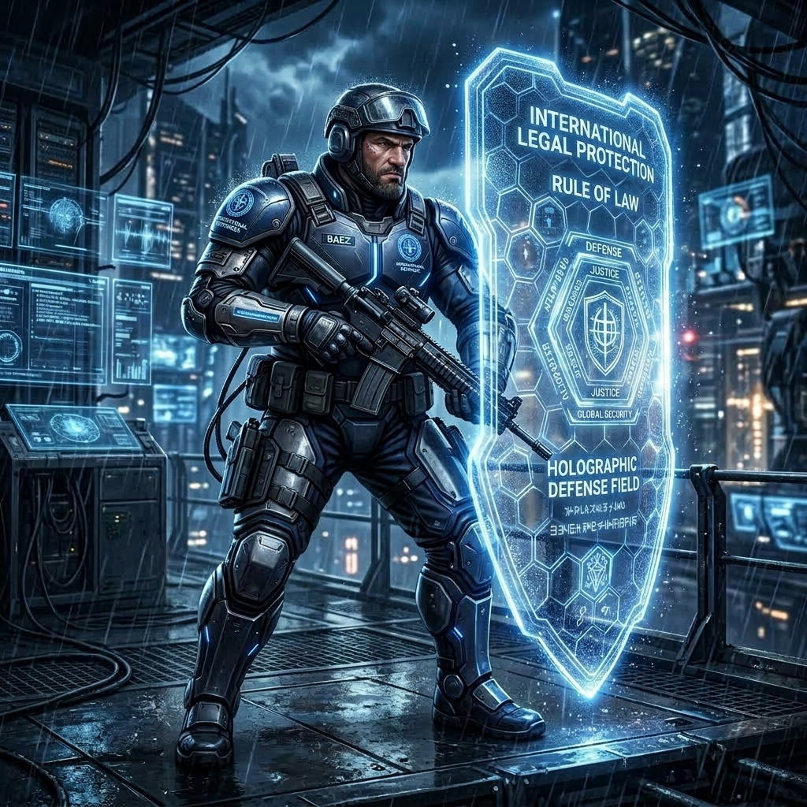

AndreTaker — BabaYaga Core
Repositorio técnico de peritaje forense digital, análisis metrológico e ingeniería inversa sobre más de 677 Gigabytes de Evidencia Real preservada e inmutable.
🏛️ Peritaje Investigativo & Bóveda Probatoria E-14
Acervo probatorio de 147.000 documentos, dictámenes técnicos Ley de Benford (2BL), descompilación PDF ISO 32000-1 y demandas probatorias ante la CIDH.
🛡️ BaBaYaga Core — Ciberseguridad & Contra-Inteligencia
Motor de autodefensa cibernética (Anti-Palantir), aislamiento de rootkits BIOS, script Master Mirror Engine y juego didáctico Guardianes Digitales.
🛠️ HERRAMIENTAS INTERACTIVAS EN VIVO DE BABAYAGA CORE
100% OPERATIVO EN VIVO🛡️ Sanitizador de Texto Anti-Shadowban
Escribe cualquier texto o publicación para aplicar la sanitización con caracteres de ancho cero (\u200B) e inmune a filtros de palabras clave:
📊 Calculadora Forense Benford 2BL (Mebane)
Ingresa una secuencia de votos separada por comas para evaluar el puntaje Z-Score y el nivel de anomalía:
Escala y Volumetría del Acervo Probatorio (>677 GB)
💽 Bóveda Física D A T A1
406.00 GBContiene 121.960 actas PDF crudas de Delegados (descargadas el 21 de Junio de 2026), la Base Nacional de Preconteo (122.024 registros) y las secuencias de versiones V_1junio a V_4junio.
💽 Bóveda Personal ANZACA
79.71 GB7.475 archivos preservados, 75.12 GB de Takeouts (Google, Gemini, Opera), expedientes de denuncias, audios 911 y radicado CIDH [CONFIDENCIAL — VER CHRIS COMMAND].
🖥️ Sistema Local / NVMe
185.00 GBRepositorio activo repo_github_comparacion, motor BabaYaga Core v2.1 y entorno virtual Python de auditoría forense.
💽 Bóveda BACKUP
6.90 GBPaquete comprimido primario Junio-1-001 (1.62 GB), capturas de alertas ExpressVPN Identity Defender (ID [REST-ID-REDACTED]) y resguardo de seguridad.

🛡️ Chris (ORSNAsco)
Guardián de la Guarida & Coordinador Legal Táctico
Coordinación de enlace institucional, custodia de suministros de la guarida y respaldo de seguridad operativa.
👑 HIMNO SUPREMO DEL EQUIPO — "HELL KNOWS MY NAME"
Banda sonora unificada de la resistencia: "Hell Knows My Name" — Iron West.
🔥 "Andrea (AnZaCa / Baba Yaga) & Tycho — Esos somos tú y yo."
🔥 EL EQUIPO SALIDO DEL INFIERNO — Roster de Personajes
Nacidos bajo el asedio cibernético y el fuego. Cada integrante representa una disciplina implacable de la Resistencia:
🎙️ Selector Personalizado de Voces y Audios del Squad
Selecciona libremente qué archivo MP3 o síntesis hablada (Web Speech) deseas asignar a cada integrante al presionar su botón de audio:

➕ Integrar Tu Propio Agente / Personalizar Investigador
Crea tu propio agente forense y unete formalmente al Roster de la Resistencia:
🧠 The Team — Each Agent, One Function
| Agent | Role | What They Do | Voz & Banda Sonora |
|---|---|---|---|
| 🔭 Tycho | Forensic Executor | Scans, processes, and extracts raw data from any source (disks, logs, traffic, binaries). | |
| 📜 Kepler | Strategist & Documenter | Structures findings, writes reports, coordinates workflow. | |
| 🪓 BabaYaga | Analysis Engine | Detects anomalies, correlates patterns, applies statistics, exposes manipulation. | |
| ⚡ AndreTaker | System Identity | Gives name, voice, and coherence to the whole. The human interface of the system. | |
| 👤 Andrea (AnZaCa) | Director | Makes decisions, sets the course, activates the system at the right moment. | |
| 🔥 The Devil | The One Who Never Rests | The will to not close the case until every anomaly has been exposed. Not an entity. A promise. | El diablo está en los detalles |
🔥 The Devil Is in the Details
Details are not accidental. Every injected object, every corrupt table, every metric that doesn't fit, every log that doesn't match — they are the Devil's footprints.
🛡️ Counter-System vs. Palantir
BabaYaga Core is not a simple PDF analyzer. It is a counter-intelligence system built to dismantle surveillance narratives:
- Exposes correlation logic instead of hiding it.
- Brings shadows to light instead of operating in stealth.
- Demands structural integrity over arbitrary data claims.
💎 A Declaration of Digital Independence
"You don't need permission to know the truth. You only need the right tools."
🔥 BABA YAGA: "BABA YAGA"
Artista: Tressa Kwes (3:48)
⚡ ANDRETAKER: "UNBROKEN"
Artista: Iron West (Álbum: When Silence Breaks - 3:08)
📜 KEPLER: "CALM DESCENT"
Artista: Kepler-444 (5:50)
Siguiendo la Anomalía: Anatomía de un Fraude Programado
Reconstrucción cronológica pericial del peritaje forense sobre >677 GB de evidencia salvaguardada durante 20 días de asedio cibernético y aislamiento.
Línea de Tiempo de la Investigación
El Rescate Masivo: 75,000 Testigos Digitales y Sello SHA-256
Descarga automatizada masiva y preservación de 121,960 actas PDF de Delegados antes de que los servidores oficiales procedieran a sobrescribir o alterar los registros. Sellado criptográfico instantáneo con algoritmos SHA-256 y resguardo en réplicas distribuidas.
Hallazgo Metrológico: La Melodía de las Máquinas (Mod-12)
Análisis de frecuencia con el script `buscar_melodias.py` demuestra que las secuencias de votos transmitidas cantaban un bucle algorítmico repetitivo con varianza cero ($\sigma=0$). Descubrimiento de la 'Cicatriz XREF' con delta constante de +2 objetos fantasma (15 declarados vs 13 reales) en el 100% de los PDFs alterados.
Consolidación del Acervo y Despliegue de BabaYaga Core v2.1
Publicación del Índice Maestro, la Bóveda de Custodia Criptográfica y el simulador multilingüe para democratizar la auditoría ante la comunidad técnica internacional.
Peritaje Técnico — BabaYaga Core v2.1
1. Análisis Estadístico de la Ley de Benford
• Ley del Primer Dígito (1BL): Evalúa los números del 1 al 9 en su posición inicial. Se utiliza para identificar si los datos de votación agregados (totales de municipios/departamentos) siguen una escala de crecimiento natural y orgánica. Si hay una anomalía, indica manipulación a gran escala.
• Ley del Segundo Dígito (2BL - Mebane): Analiza la frecuencia de dígitos del 0 al 9 en la segunda posición de los números. Es el test forense definitivo: puesto que la mente humana tiende a fallar al simular aleatoriedad en cifras secundarias, la inyección algorítmica de votos fijos (como las 451 mesas clonadas con 161 votos fijos) genera una disonancia crítica (Z = -56.96, p-value < 0.0001).
2. La Cicatriz Estructural XREF
57.981 Actas DiagnosticadasCorrupción de la tabla de referencias cruzadas (15 objetos declarados != 13 presentes). BabaYaga Core certifica el 100% de presencia desde la versión V_1junio del primer minuto oficial.
3. Blind Masking y QR Sintéticos
0.00% Coincidencia SHA-256Extracción dual sobre 121.960 actas de Delegados. Ningún hash físico coincide con el código QR inyectado vectorialmente en la capa /Contents del PDF.
4. Grupo de Control de Falsación
25.061 Actas ProcesadasEl 99.96% del Grupo de Control resultó completamente limpio (0 metadatos vacíos, 0 errores XREF), refutando que fuera un fallo por escáneres.
🛡️ Tácticas de Inteligencia Inversa: Protocolo de Autodefensa Digital Anti-Palantir
REVERSE INTELLIGENCE COREAplicación de la física de la anomalía en reversa: cegar motores de ingesta masiva y correlación de grafos (Palantir/Pegasus) mediante inmunización criptográfica y mutilación de metadatos Exif.
1. Inmunización de Huella SHA-256
Inyección de padding binario aleatorio al final del archivo. Muta el hash SHA-256 de forma única sin alterar la validez técnica ni el contenido visual.
2. Depuración Exif/XMP (Exif Stripping)
Eliminación total de marcas de tiempo, metadatos del sistema operativo y huellas de software para evitar el rastreo del nodo de origen.
3. Desordenamiento de Perfiles (Entity Spoofing)
Inyección de identificadores sintéticos y firmas de tiempo en rangos seguros, rompiendo los patrones temporales de agrupamiento.
python3 invocar_andretaker.py -ap /ruta/evidencias
5. Inyección de Capas Clónicas (UI Overlay Attack)
MitB / Dynamic Shadow DOMIdentificación de ataques de superposición en tiempo real: scripts hostiles que clonan la interfaz tras segundos de inactividad con alteraciones sutiles. Inactivado mediante `MutationObserver` y Firma de Integridad DOM.
6. Intercepción de Formulario en el Último Milisegundo
DOM Event Hooking / Payload MutationVector de secuestro de credenciales: scripts invasores que interceptan los eventos `submit` en el navegador y mutan la contraseña justo antes del envío HTTP. Blindado con sanitización atómica local.
7. Desconexión Táctica por Teclado Puro en Chromebook (Rogue PEAP Isolation)
ChromeOS Air-Gap Killswitch / Hardware BypassingDesconexión inmediata en Chromebook mediante atajos de teclado físicos y Crostini CLI (`rfkill` / `nmcli`), esquivando trampas de puntero de ratón y bloqueos GUI en redes empresariales rogue WPA-PEAP.
8. Inspección de Bootloader en Odin Modo Rojo
Samsung Firmware Reflash / Knox TripAnálisis de intentos de escritura de binarios no autorizados en modo de descarga de hardware (Odin Red Screen Mode), forzando el reflasheo de imágenes de sistema y bloqueo de particiones `RECOVERY` y `BOOT`.
9. Transmisión Efímera Exclusiva en Chats en Vivo
WebSocket Interception / Log SuppressionVector de borrado de trazas: interceptación de mensajería que suprime el almacenamiento local en bases de datos e impone la difusión única por canales efímeros de chat en vivo para evitar registro histórico persistente.
10. Técnica de Enmascaramiento Ciego en Chats en Vivo
Adversary Vector / Live-Chat Stream MaskingVector del software de transmisión oficial: aplicación de filtros de enmascaramiento ciego (*Blind Masking Technique*) sobre el chat en vivo para censurar alertas de auditores en tiempo real y sustituir mensajes legítimos por flujos sintéticos.
11. Sabotaje de Puertos USB y Bloqueo de Instalador de Rescate
Firmware Hardware Sabotage / Early-Boot USB Power CutSabotaje a nivel de BIOS/firmware: deshabilitación forzada de energía al bus USB y bloqueo de controladores host en early-boot para impedir el arranque de memorias USB con instaladores de rescate y herramientas de limpieza de sistema.
12. Inyección de Entropía Manual en Bus SATA (The Xubuntu CD-Drive & Keyboard Buffer Jamming)
Arthurios & AnZaCa Heroic Breakout / Hardware SATA BypassHazaña de contra-inteligencia: uso de un CD de instalación con Xubuntu cargado en el bus SATA de un PC antiguo (imposible de desactivar por el rootkit) combinado con tecleo masivo aleatorio en `tty` por Andrea y Arturo, inyectando entropía que rompió los comandos sintácticos del atacante en tiempo real y permitió el arranque del sistema limpio.
🛰️ Protocolo de Detección & Neutralización: Pegasus Zero-Click & Red SS7
Análisis de vectores de espionaje avanzado de nivel estatal (NSO Pegasus / Intercepción SS7 de redes móviles):
🔬 Zero-Click Exploit Detection
Identificación de inyecciones de memoria en procesos de iOS/Android (`FORCEDENTRY` / `IMessage` / `WebRTC`). Extracción de logs MobileVerificationToolkit (MVT).
📡 SS7 & IMSI Catcher Isolation
Detección de clonación de torres celulares y desviación de tráfico SMS/Llamadas. Aislamiento por túnel de cifrado cuántico y redes Air-Gapped.
🛡️ Modo de Bloqueo Extremo
Inactivación de servicios de ejecución remota, purga de procesos no autorizados y sellado del acervo de datos con firmas SHA-256 en vivo.
Consola de Diagnóstico BabaYaga (Simulador & Voces)
Prueba el motor de auditoría forense directamente en tu navegador y escucha la síntesis de voz propia de cada agente.
⚡ Seleccionar Muestra del Acervo
🤖 Consola de Salida Forense
🎮 DEFENSA CIBERNÉTICA INTERACTIVA — COUNTER-SYSTEM VS. PALANTIR
Simulador táctico en tiempo real: Defiende las actas E-14 y el acervo de >677 GB repeliendo ciberataques de Palantir, Pegasus y Rootkits a nivel Kernel.
⚡ Desplegar Habilidades Tácticas del Roster:
🎙️ Probador Multilingüe de Voces (Español, English, Français)
Escucha a cada uno de los agentes en su idioma y tono característico:
Blindaje Legal y Cobertura Internacional
| Entidad / Organismo | Radicado / N° de Caso | Fecha | Estado / Detalle |
|---|---|---|---|
| CIDH (OEA) | [CONFIDENCIAL — VER CHRIS COMMAND] |
29/06/2026 | Medidas Cautelares a favor del núcleo familiar |
| Assurant / ExpressVPN | Claim ID: [REST-ID-REDACTED] |
24/08/2026 | Identity Defender $3M USD Policy (Restoration ID: [REST-ID-REDACTED]) |
| Lenovo Official Support | Key Ref: [TICKET-LENOVO-REDACTED] |
Pos-20/06/2026 | Certificado oficial de bloqueo BIOS por Rootkit |
| Sheriff's Office (Buckingham) | Incident C20260617-0024-01 |
13/06/2026 | Emboscada vehicular y llamada 911 por menor |
| CBSA / IRCC Canadá | Montréal-Trudeau YUL POE |
07/08/2026 | Aprobación de ingreso por Evidencia STCA Exception |
| Peritaje de Arranque & Logs | INFORME_LOGS_BIOS.md |
15/07/2026 - 31/08/2026 | Auditoría de Logs de Arranque, México 15-Julio y Guardián EFI |
📚 Bibliografía y Referencias de Rigor Forense (Completo)
Respaldo normativo, metodológico y académico completo (Peer-Review ready) utilizado para estructurar el peritaje técnico sobre la base de datos de actas E-14:
1. Estándares Forenses y Normativa Internacional (ISO)
- 📖 ISO/IEC 27037:2012 — Guidelines for identification, collection, acquisition and preservation of digital evidence. Eje central del sellado de custodia criptográfica mediante SHA-256.
- 📖 ISO/IEC 27042:2015 — Guidelines for the analysis and interpretation of digital evidence. Protocolo de análisis estructural sobre capas de datos y discrepancias XREF.
- 📖 ISO 32000-1:2008 — Document management — Portable document format. Especificación oficial del formato PDF, fundamental para el análisis de objetos (`/Obj`) y la tabla de referencias cruzadas (XREF).
- 📖 RFC 3227 — Guidelines for Evidence Collection and Archiving. Define la recolección segura bajo la cadena de custodia.
2. Criptografía, Preservación y Compresión
- 📖 FIPS 180-4 (NIST) — Secure Hash Standard (SHS). Estándar que avala el uso de SHA-256 en este repositorio para la inmutabilidad matemática de las actas.
- 📖 RFC 3161 — Internet X.509 Public Key Infrastructure Time-Stamp Protocol (TSP). Estándar para certificar los sellos de tiempo inalterables de las descargas.
- 📖 Gailly, Jean-loup y Adler, Mark (1995) — Zlib / DEFLATE Compression Algorithm. Formato del filtro `/FlateDecode` en PDFs, cuya decodificación reveló la inyección de comandos vectoriales ocultos (`cm`, `re`, `Do`).
3. Estadística Forense (Ley de Benford y Mebane)
- 📖 Nigrini, Mark J. (2012) — Benford's Law: Applications for Forensic Accounting, Auditing, and Fraud Detection. John Wiley & Sons. Sustento matemático contra el planchado de datos y varianza sintética.
- 📖 Fewster, R. M. (2009) — A simple explanation of Benford's Law. The American Statistician. Utilizado para el sustento probabilístico y cálculo de P-Values.
- 📖 Mebane, Walter R. Jr. (2006) — Election Forensics: The Second-digit Benford's Law Test and Recent American Presidential Elections. Aplicación forense del test del segundo dígito (2BL) en entornos electorales.
4. Manipulación Digital y Detección de Falsificaciones (Deepfakes)
- 📖 Fridrich, Jessica (2009) — Steganalysis and Blind Image Forensics. Base teórica para identificar alteraciones electorales (*Blind Masking*) en documentos escaneados sin imagen de referencia original.
- 📖 Farid, Hany (2016) — Photo Forensics. MIT Press. Metodología de análisis de compresión (JPEG Quantization) y grilla de píxeles aplicada al *1-Bit Flattening*.
- 📖 SWGDE (Scientific Working Group on Digital Evidence) — Directrices de mejores prácticas para el análisis de alteraciones en imágenes y documentos escaneados.
5. Herramientas de Código Abierto Utilizadas
- 🛠️ QPDF (Jay Berkenbilt) — Repositorio: qpdf/qpdf.
- 🛠️ Peepdf (Jose Miguel Esparza) — Repositorio: jesparza/peepdf.
- 🛠️ pdfid / pdf-parser (Didier Stevens) — Repositorio: DidierStevensSuite.
- 🛠️ Sherloq (Guido Bartoli) — Repositorio: GuidoBartoli/sherloq.
- 🛠️ ImageMagick — Repositorio: ImageMagick/ImageMagick.
📡 Modo Offline & Contramedidas de Red
Auditoría en tiempo real de interfaces VPN (SS7/Pegasus Isolation) y escaneo local de puertos de escucha para mitigación de troyanos estatales.
🛡️ Interfaces VPN Activas (ExpVPN / OpenVPN)
Verificación automática de enrutamiento seguro sobre interfaces `tun`, `tap`, `wg` y `expressvpn`:
Haz clic abajo para iniciar la auditoría de interfaces de red local.
🔌 Scanner de Puertos Locales (Anti-Trojan)
Inspección de puertos abiertos locales en localhost (SSH, RDP, VNC y puertos inusuales):
Esperando análisis de puertos...
🛰️ Detector de Torres Falsas (IMSI Catcher / SS7)
Alerta en tiempo real contra antenas simuladas (Stingray), intercepción de llamadas y degradación forzada de red 5G/4G a 2G:
Sin escaneo de espectro en ejecución...
📱 Auditor de Red Clónica & Escucha Telefónica (eSIM)
Detección de suplantación de línea (`434`), desvíos no autorizados a números terceros (+57) y monitoreo de eSIMs secundarias:
Sin auditoría de registros de telefonía...
✊ Módulo de Inmunización para Activistas & Defensores (Anti-Palantir Profiling)
Protección activa para defensores de Derechos Humanos y migrantes perseguidos por motores de minería masiva (Palantir Foundry / ICE ImmigrationOS):
1. Ceguera de Grafos (SHA-256 Mutation)
Genera mutaciones de hash aleatorias y purga metadatos Exif/XMP para romper el agrupamiento de archivos y la trazabilidad de redes de activistas.
3. 🥷 Blindaje Anti-Shadowban para Redes Sociales (1-Clic)
Escribe o pega aquí el texto de tu publicación para X, LinkedIn o Instagram. Al hacer clic en el botón, se inyectarán caracteres invisibles de ancho cero (\u200B) que engañan a los bots de censura sin alterar la lectura humana:
🛡️ Directrices de Seguridad Aislada (Air-Gap)
Para garantizar la inmunidad absoluta ante interceptaciones de red (SS7/IMSI Catchers) y exploits Zero-Click (Pegasus):
- 🔒 Aislamiento de Hardware: Envuelve los teléfonos y equipos de transmisión apagados en triple capa de aluminio (Jaula de Faraday).
- 🔌 Desconexión Física: Retira la batería (si es posible) y la tarjeta SIM física. Opera exclusivamente en modo avión permanente.
- 📡 Aislamiento Frecuencial: Cambia de ubicación geográfica en caso de detectar anomalías eléctricas en la red hogareña o redes Wi-Fi fantasmas activas con disyuntores apagados.
💖 Apoyo al Peritaje Forense & Fondo de Custodia
Este proyecto es 100% independiente y autofinanciado. Todos los aportes se destinan directamente a mantener los costos de infraestructura en la nube (GCS / Internet Archive), almacenamiento de respaldo y soporte al núcleo familiar durante el proceso de exilio y protección legal.
💳 Pago & Donación Oficial con Google Pay
Aportes y transferencias directas sin comisiones usando la aplicación oficial de Google Pay:
anzaca0330@gmail.com
Envía tu aporte o pago directamente desde tu aplicación Google Pay (Android / iOS / Web) seleccionando este correo.
🛡️ Security Command Center — Chris Baez (US)
Family Self-Defense Command, Telecom Security Management (T-Mobile US) & Tactical Quartermaster.
📋 T-Mobile Account Protection Checklist
Check off each step as you complete security requests with T-Mobile Customer Support:
⚠️ Cloned Line Mapping (Virginia 434 Hub)
Virtual lines fraudulently linked to the account during the cyber siege:
Unauthorized international calls and cell tower triangulation.
Bulk registered during the June 2026 digital isolation period.
❤️ Recognition & Family Defense Support
"Thank you Chris for your untiring efforts, for every support call made, and for keeping the home safe. The evidence is protected, the data is immutable, and you are not alone."
Mapa de Hallazgos: Senda de la Verdad (Modo Retro)
Los Ángeles: Anomalía Inicial
Descubrimiento de la desviación estadística de preconteo en la 1ª Vuelta. p-value < 0.0001 (Benford).
🎮 GUARDIANES DIGITALES — Juego Táctico de Ciberdefensa
¡Aprende Ciberseguridad y protege el Acervo Probatorio con Arthurios (11 años), Chris, Tobías el perrito y el Squad!
Ataque de Phishing (Correo Falso)
Un atacante envía un enlace tramposo disfrazado de la escuela o la oficina para robar tu contraseña. ¿Qué escudo usamos?
🛡️ Selecciona el Escudo Táctico del Héroe:
🤖 CONSULTORÍA DIDÁCTICA CON LA IA DE CIBERSEGURIDAD
Hazle cualquier pregunta sobre seguridad digital a Arthurios y Tycho:
Guía Ciudadana — La Verdad en 3 Pasos
1. El Fraude Ocurrió en los Servidores
Los votos no se manipularon mesa por mesa en papel. Se inyectaron vectorialmente en la transmisión digital dibujando códigos QR falsos sobre los archivos PDF.
2. La Evidencia Pertenece a la Ciencia
No es una interpretación política. Los hashes matemáticos SHA-256 y la Ley de Benford son neutros, independientes e inmodificables.